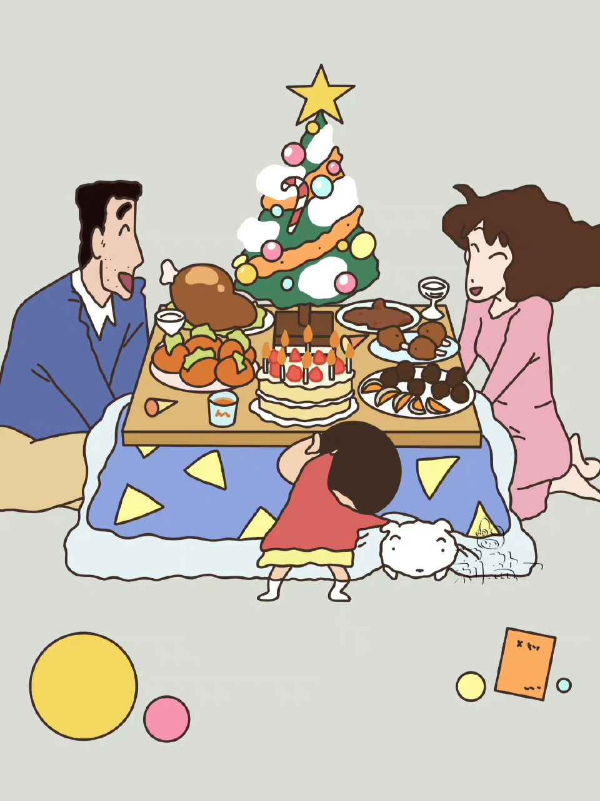

クレヨンしんちゃん
背景介绍
《蜡笔小新》是一部于1992年出品的日本家庭搞笑动画片，该片主要由本乡满、原惠一、武藤裕治导演，日本朝日电视台于1992年4月13日播映了第一集。至今仍在播出。
 |
 |
该片根据日本漫画家臼井仪人所创作的同名漫画作品《蜡笔小新》改编而成，叙述了日本5岁小男孩野原新之助，在日常生活中与家人、老师、同学、邻居、路人等之间所发生的故事
PHOTO DISPLAY
 |
 |
|
人物简介 |
作者简介 |
剧情简介 |
<
臼井仪人 （本名臼井义人，1958年4月21日-2009年9月11日），是一位日本男性漫画家，出生于静冈县静冈市，成长并住于埼玉县春日部市，代表作为《蜡笔小新》，埼玉县春日部是《蜡笔小新》的故事舞台。 |
野原新之助，5岁，是双叶幼稚园向日葵小班的学生，是野原广志和野原美冴的孩子。性格热情、口无遮拦、早熟、不太积极、容易吃醋、无厘头、腹黑、难进入状况，且行事风格总是超乎逻辑，与父母住在一起。 |
野原新之助是一个年仅5岁，正在幼儿园上学的小男孩。他家住在春日部的市郊，家里有爸爸妈妈，还有一条名叫小白的小狗，随后又加入了新的成员妹妹野原向日葵。作者从日常生活中取材，叙述了野原新之助在日常生活中所发生的故事。 |
クレヨンしんちゃん
Copyright@2023 版权所有：22计科一班hk.Studio